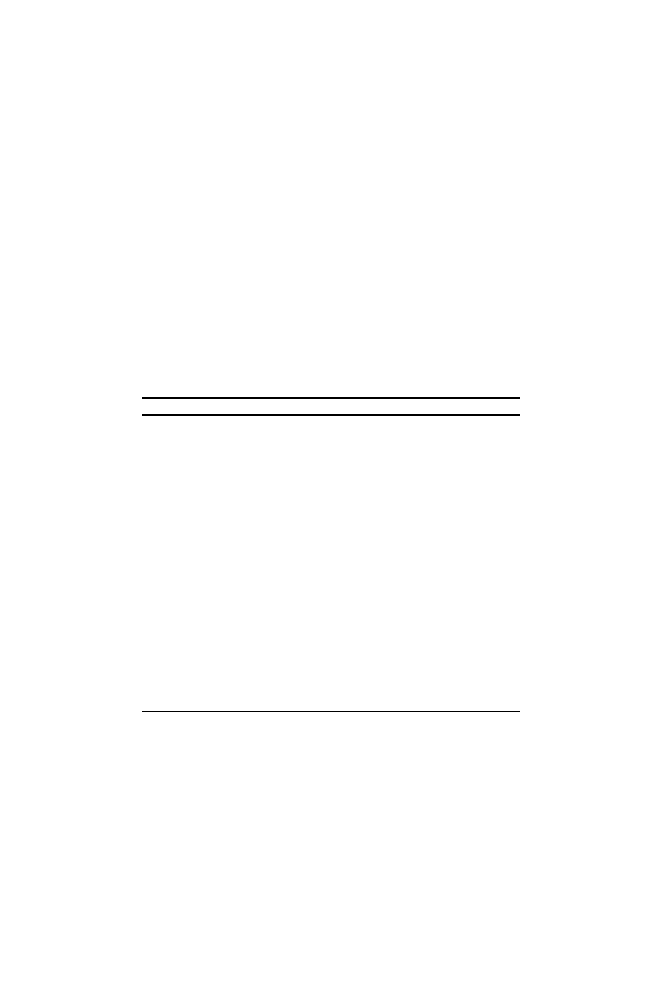

2.2 Biological Words:
k
= 1 (Base Composition)
39
or by determining the buoyant density of the DNA in a CsCl gradient us-
ing equilibrium ultracentrifugation. Both methods can reveal the presence of
genome fractions having different base compositions, and in the case of ultra-
centrifuge measurements, bands of genomic DNA adjacent to the main band
and differing from it in base composition may be described as “satellites.”
Table 2.1 presents the base compositions of DNA from a few organisms,
indicating the range over which this statistic can vary. Obviously, there are
constraints on base composition imposed by the genetic code: long homopoly-
mers such as
· · ·
AAAAA
· · ·
(fr(
G
+
C
) = 0) would not encode proteins having
biochemical activities required for life. We see more about this when we con-
sider
k
= 3 (codons).
Table 2.1.
Base composition of various organisms. Bacterial data taken from the
Comprehensive Microbial Resource maintained by TIGR:
http://www.tigr.org/
tigr-scripts/CMR2/CMRHomePage.spl
.
Organism
%
G
+
C
Genome size (Mb)
Eubacteria
Mycoplasma genitalium
31.6
0.585
Escherichia coli
K-12
50.7
4.693
Pseudomonas aeruginosa
PAO1
66.4
6.264
Archaebacteria
Pyrococcus abyssi
44.6
1.765
Thermoplasma volcanium
39.9
1.585
Eukaryotes
Caenorhabditis elegans
36
97
(a nematode)
Arabidopsis thaliana
35
125
(a flowering plant)
Homo sapiens
41
3,080
(a bipedal tetrapod)
Another point will be visited in a later chapter: the distribution of individ-
ual bases within the DNA molecule is not ordinarily uniform. In prokaryotic
genomes in particular, there is an excess of
G
over
C
on the
leading strands
(strands whose 5
to 3
direction corresponds to the direction of replication
fork movement). This can be described by the “
GC
skew,” which is defined as
(#
G
−
#
C
)/(#
G
+ #
C
), calculated at successive positions along the DNA for
intervals of specified width (“windows”); here, #
G
denotes the number of
G
s
and so on. As will be seen later, this quantity often changes sign at positions
of replication origins and termini in prokaryotic genomic sequences. This is